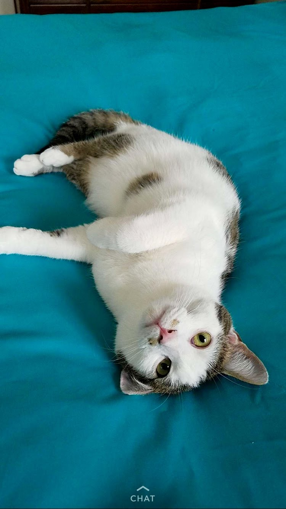
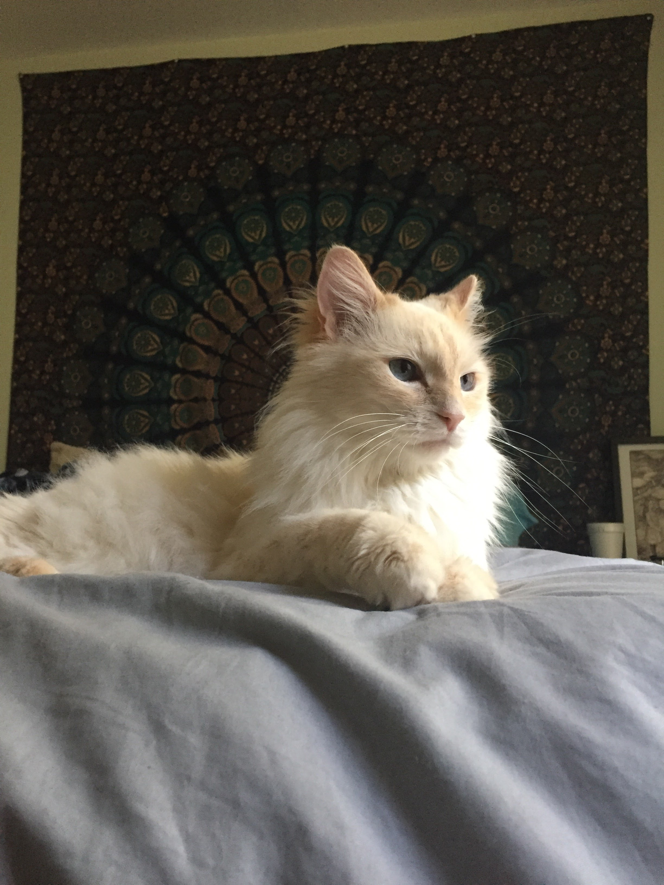
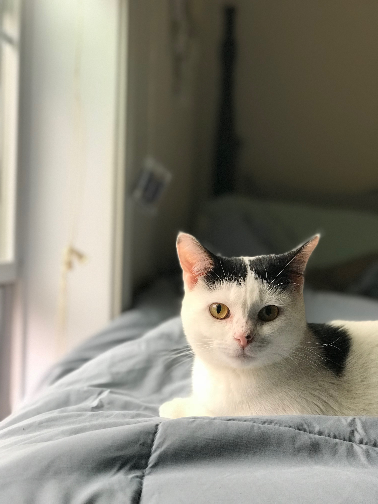
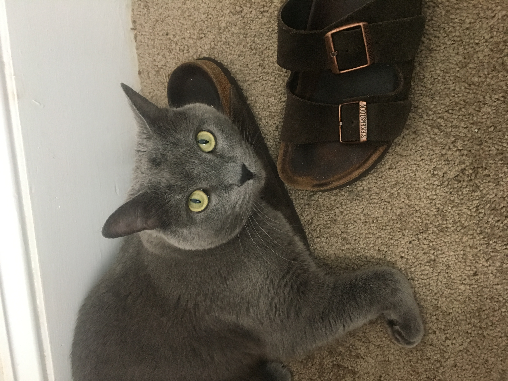
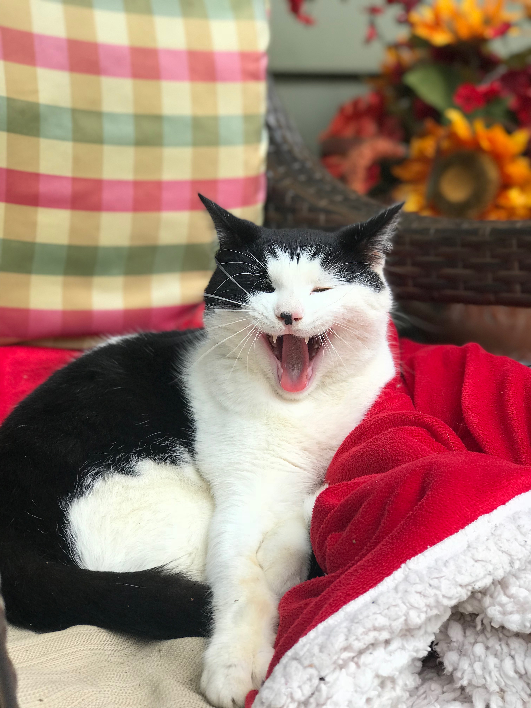
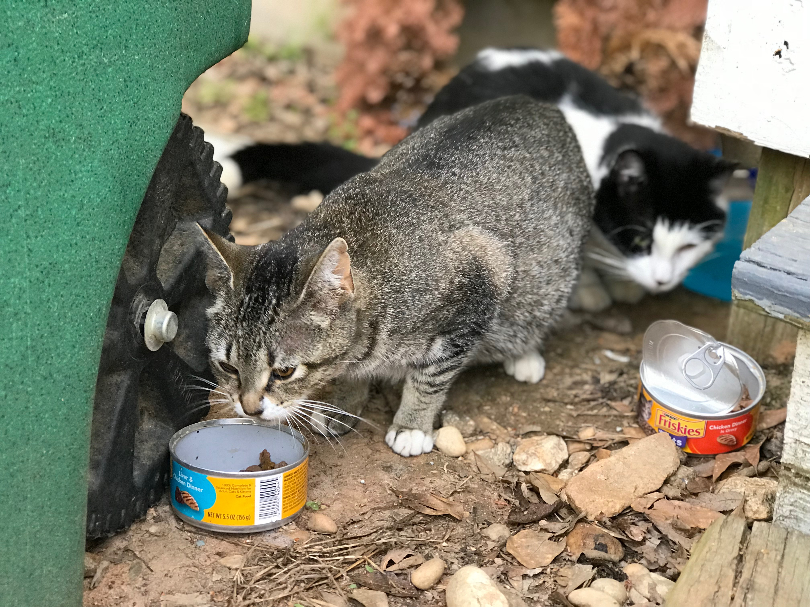

My cats name is Finn. He was born May 15th 2017. I adopted him on Black Friday of last year. He is a tabby cat that loves to chase toys. Finn lives with me in Athens, but sometimes he stays at my parents house in Cumming Georgia. When he visits my parents house, Finn plays with my family cat, Snowball. Snowball is seven years old and very easygoing. Finn and Snowball like to play fight and cuddle together.
 My best friends all live in a house on 277 Arch Street. They have two indoor cats that live with them. One cats name is Stormy, and she is about the same age as Finn. Stormy likes to bite people and play with her pet fish. Luna is the second indoor cat that lives at 277 Arch Street. She is a Russian Blue (Felis catus) and has very pretty golden eyes. Luna likes to fight with Stormy. Sometimes Luna likes to run outside or sit on top of the tall bookshelf.
 There are 5 cats that are outdoor cats that live at 277 Arch Street. The most popular one is named Mr. Mistoffelees, but they call him Mr.Mew for short. He is a ladys man, and will be a dad in 64-67 days. Mr.Mew's girlfriend is named Cleo. They like to cuddle together on the porch chairs.
 | Cat Name | Living Location | Age | Favorite Activity | Coat Color |
|---|---|---|---|---|
| Finn | Hailey's Apartment | 11 months | Playing with Snowball | White,Brown & Black |
| Snowball | Cumming, Georgia | 7 years | Sleeping in the sun | White |
| Stormy | 277 Arch Street | 10 months | Biting her mom | White & Black |
| Luna | 277 Arch Street | 6 years | Escaping to play outside | Grey |
| Mr.Mew | Arch Street | 1 year | Getting pets from the girls | White & Black |
| Cleo | Arch Street | 2 years | Snuggling with Mr.Mew in the grass | Brown & Black |